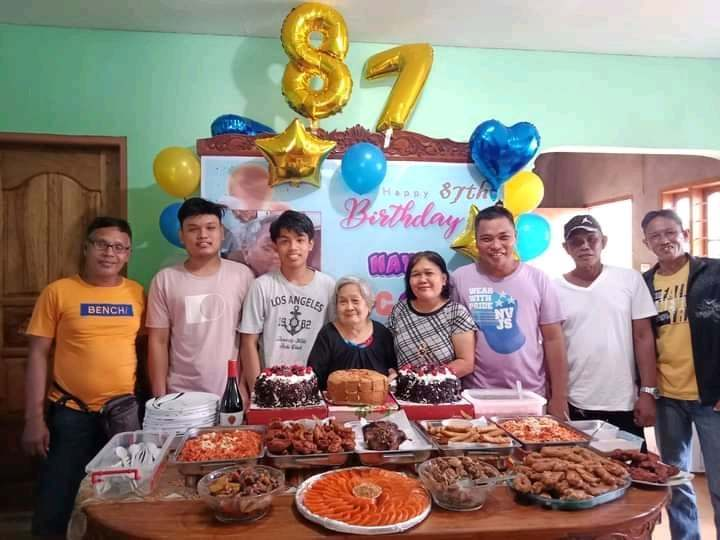
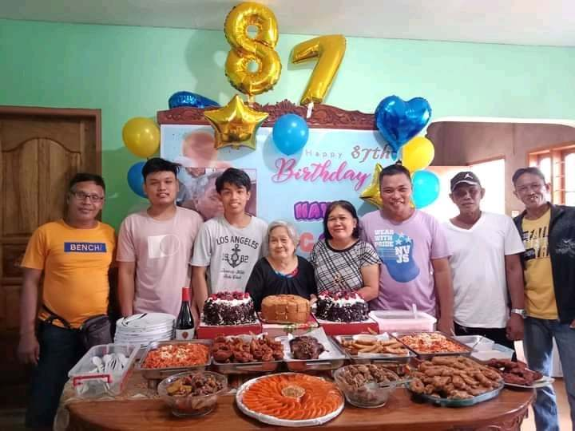

Joven Serdan Bataller
BS INFORMATION TECHNOLOGY-3B


Personal Information
Birthday: June 17, 2003
Age: 20 Years Old
Address: Apud, Libon, Albay
Height: 5'8 ft
Weight: 80 kg
Family Members
Father | Rubentino Bataller
Mother | Rebecca Bataller
Brother | Lee Rovic Bataller
Programming skills
-
HTML
-
CSS
-
Javascript
-
C++
Other Skills
- Design 30%
- Language 70%
- Writing 70%
- Computing 54%
- Editing 34%
Interests
- Game
- Cooking
- Music
- Basketball
- Film
- Photography
 
